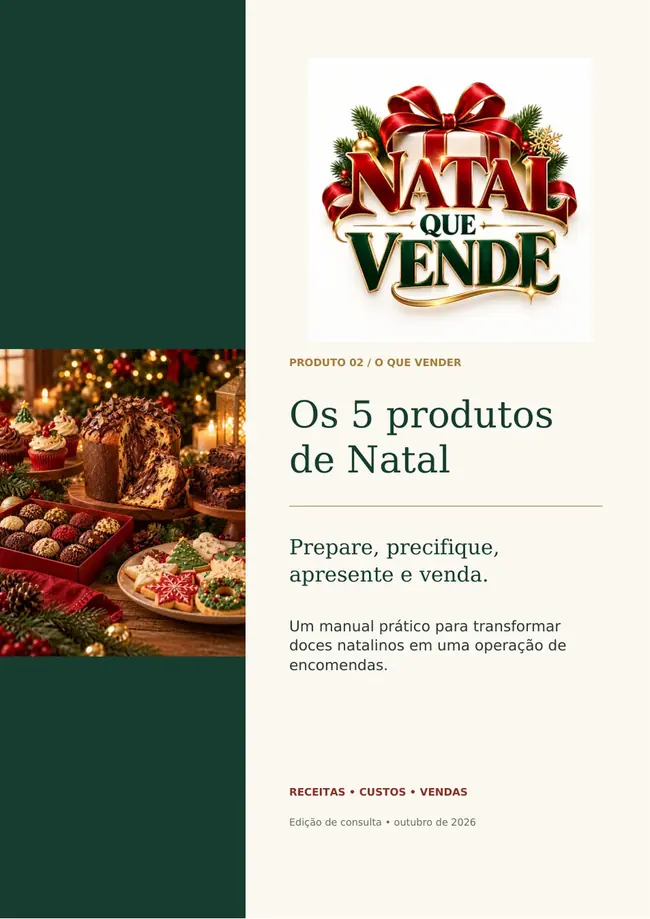
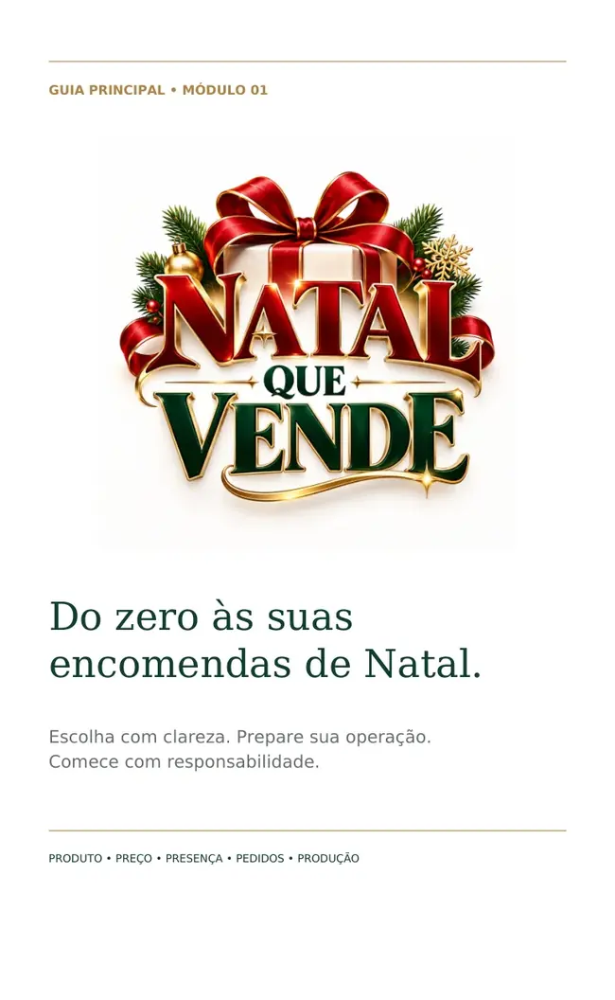
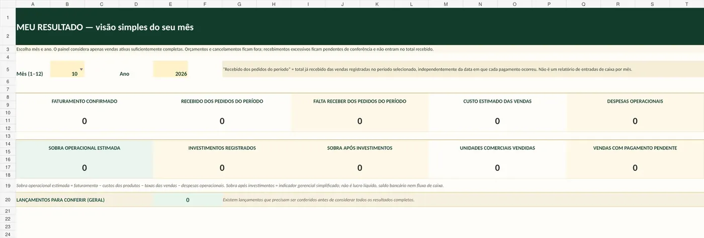
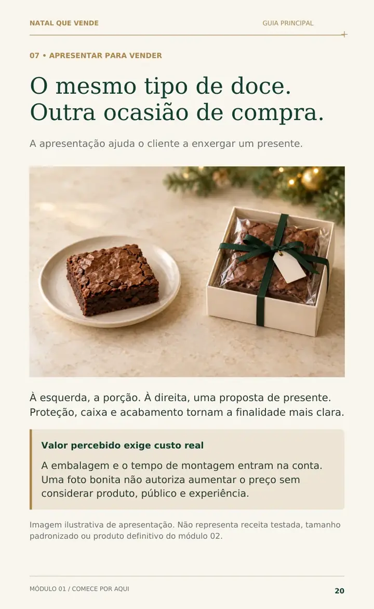
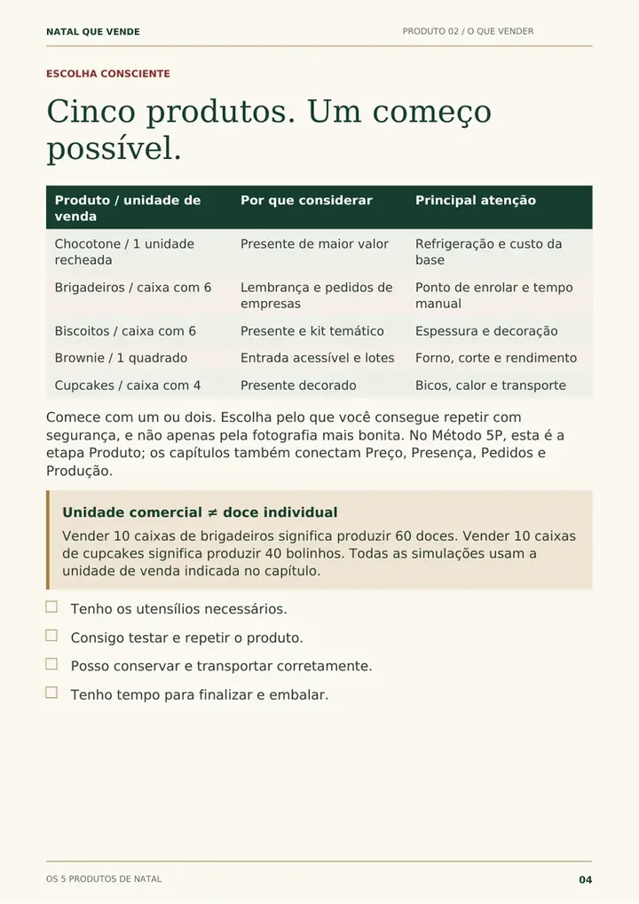
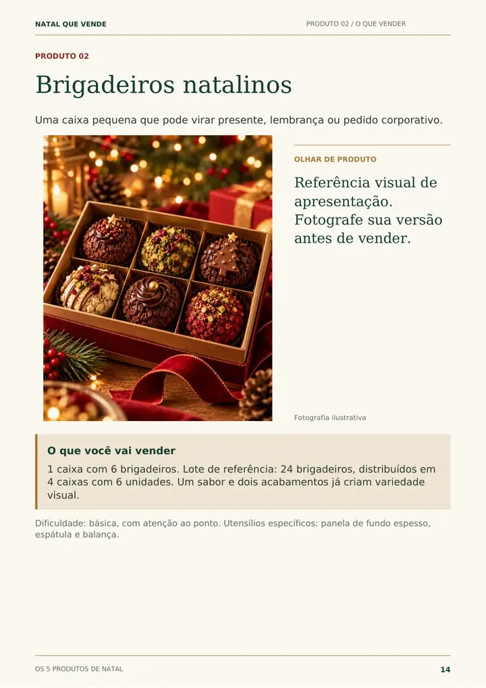
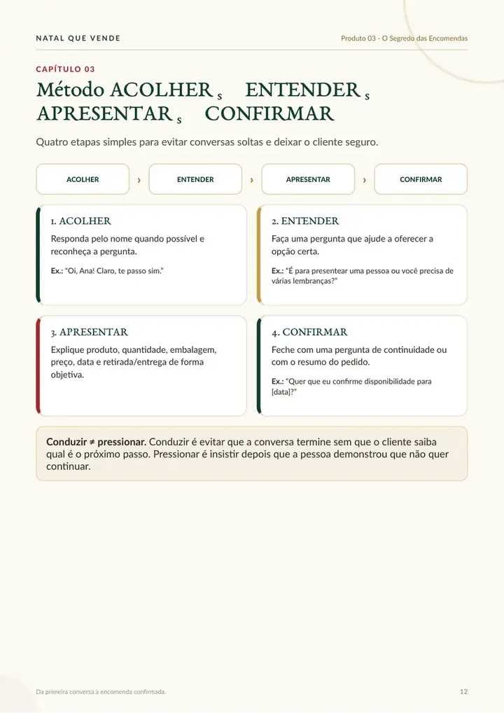
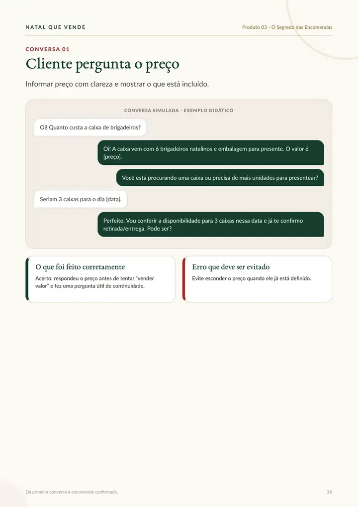

Presentear
Uma lembrança bonita para colegas, vizinhos, clientes ou pessoas queridas.
Conheça um kit que reúne cinco produtos natalinos, orientação comercial, materiais de divulgação e uma planilha para organizar suas encomendas.
Versão de prévia: preço, checkout, garantia e entrega comercial final ainda serão configurados antes do lançamento.


O vídeo oficial será adicionado aqui sem alterar o layout. Enquanto ele não está pronto, a página exibe uma capa estável — sem player quebrado e sem autoplay.
Presentes, lembranças, confraternizações e celebrações criam ocasiões em que doces bem apresentados podem fazer sentido. O kit ajuda você a transformar essa oportunidade em um começo mais organizado — sem prometer vendas garantidas.
Uma lembrança bonita para colegas, vizinhos, clientes ou pessoas queridas.
Doces para ceias, confraternizações e pequenos encontros de fim de ano.
Uma opção pronta para quem quer levar algo especial sem produzir em casa.
Teste um ou dois produtos, entenda sua capacidade e só depois amplie o cardápio.
As imagens abaixo fazem parte da campanha visual do projeto. O material orienta a testar receitas, rendimento, conservação, embalagem e custos antes de aceitar encomendas.
Uma opção de presente com maior valor percebido e acabamento artesanal.
Principal atenção: recheio, conservação, custo e transporte.Lembrança pequena, presenteável e adaptável a pedidos em quantidade.
Principal atenção: ponto, padronização e tempo manual.Uma opção leve, temática e com boa leitura visual para presente.
Principal atenção: espessura, secagem e decoração reproduzível.Um produto unitário de entrada, útil para lembranças e lotes.
Principal atenção: forno, corte, rendimento e embalagem.Uma apresentação de presente com decoração natalina e alto apelo visual.
Principal atenção: cobertura, calor e transporte.O material foi organizado para acompanhar decisões diferentes: entender o começo, escolher produtos, vender, divulgar e controlar os números.
Guia inicial para entender a operação, o Método 5P e preparar um plano antes de abrir encomendas.
Manual com receitas de referência, produção, embalagem, exemplos de custos e decisões comerciais.
Manual comercial para transformar interesse em conversas organizadas e pedidos confirmados.
Conjunto de materiais comerciais editáveis no Canva, preparado para cardápios, posts, Stories, etiquetas e tags.

Planilha editável para organizar produtos, vendas, pagamentos, despesas, investimentos e resultados estimados.
Em vez de tentar resolver tudo ao mesmo tempo, você avança por uma decisão de cada vez.
Conheça os cinco produtos e decida quais realmente cabem no seu começo.
Estude as receitas, faça lotes de teste e registre rendimento e tempo.
Atualize seus custos e use a planilha para organizar preços e resultados.
Monte uma oferta clara e use as orientações e materiais comerciais.
Registre encomendas, pagamentos, despesas e limites de produção.
Estas imagens foram extraídas dos arquivos anexados ao projeto. São amostras de divulgação — os PDFs completos não ficam expostos publicamente no site.





A demonstração se apoia no que existe dentro dos materiais: páginas reais, ferramentas reais e uma proposta clara sobre o que o kit faz — e o que ele não promete.
Você recebe uma estrutura de cinco módulos digitais pensados para trabalhar em sequência e também servir como consulta durante a campanha.
Este bloco só é exibido quando avaliações reais e autorizadas forem cadastradas.
As respostas abaixo usam apenas condições já confirmadas pelos materiais. O que ainda depende da finalização comercial aparece como pendente.
Não é necessário começar como confeiteira profissional, mas você precisa estudar, fazer lotes de teste, cuidar de higiene, segurança, conservação, custos e capacidade antes de vender.
Sim. A oferta é composta por materiais digitais, incluindo PDFs e uma planilha XLSX. O site não envia produto físico.
A forma final de entrega será configurada junto ao checkout antes do lançamento. Esta versão de prévia ainda não promete um método específico de liberação.
O Produto 04 foi planejado como um kit editável no Canva. Ele ainda está em finalização e só será ativado comercialmente quando os modelos e links de entrega estiverem prontos.
Os requisitos exatos serão informados quando o Produto 04 for finalizado e testado. Esta página não promete compatibilidade com um plano específico antes dessa validação.
Depende do produto escolhido e do que você já possui. O material orienta a testar com a estrutura disponível e evitar compras grandes antes de validar produto e demanda.
Ela é entregue em formato XLSX e foi desenvolvida para Excel. Recursos podem se comportar de forma diferente em outros editores; a compatibilidade integral com Google Sheets deve ser verificada antes de ser anunciada como garantida.
O material foi criado para orientar testes e uma operação de encomendas, mas cada pessoa deve validar sua execução, conservação, rotulagem e exigências sanitárias locais antes de comercializar alimentos.
Não. O kit organiza conhecimento, ferramentas e processo. Vendas, demanda, custos, margem e resultados dependem da execução e da realidade de cada operação.
As condições de garantia ainda não foram definidas. Elas serão apresentadas de forma clara no checkout antes da publicação comercial.